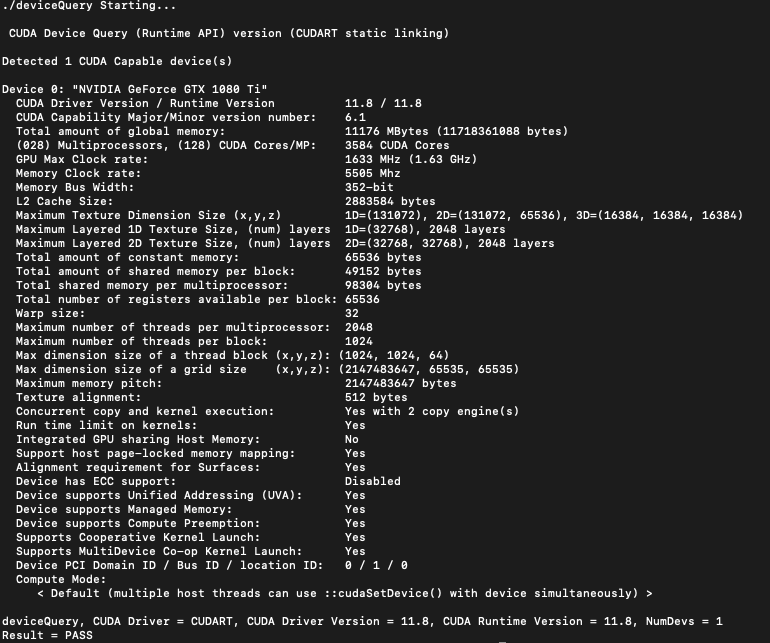

CUDA安装说明¶
安装准备¶
验证当前机器的GPU是否支持CUDA
quant@debian:~$ lspci | grep -i nvidia
01:00.0 VGA compatible controller: NVIDIA Corporation GP102 [GeForce GTX 1080 Ti] (rev a1)
01:00.1 Audio device: NVIDIA Corporation GP102 HDMI Audio Controller (rev a1)
获取当前Linux的运行系统
quant@debian:~$ uname -m && cat /etc/*release
x86_64
针对选定的版本下载安装最新的CUDA Toolkit(Version 11.8)，参考详细信息 。以下示例为Debian 11的deb本地安装。
Debian本地安装¶
下载最新的CUDA安装包
quant@debian:~$ wget https://developer.download.nvidia.com/compute/cuda/11.8.0/local_installers/cuda-repo-debian11-11-8-local_11.8.0-520.61.05-1_amd64.deb
安装本地存储库
quant@debian:~$ sudo dpkg -i cuda-repo-debian11-11-8-local_11.8.0-520.61.05-1_amd64.deb
注册临时公共GPG密钥
quant@debian:~$ sudo cp /var/cuda-repo-debian11-11-8-local/cuda-*-keyring.gpg /usr/share/keyrings/
启用contrib仓库
quant@debian:~$ sudo add-apt-repository contrib
安装CUDA
quant@debian:~$ sudo apt-get update
quant@debian:~$ sudo apt-get -y install cuda
安装后的操作¶
包含PATH变量
quant@debian:~$ echo 'export PATH=/usr/local/cuda-11.8/bin${PATH:+:${PATH}}' >> ~/.bashrc
警告
安装完成后，必须确认PATH路径。若使用runfile安装方式，需要设置正确的 LD_LIBRARY_PATH变量 。
验证安装：运行CUDA示例¶
下载CUDA可写示例
quant@debian:~$ git clone https://github.com/NVIDIA/cuda-samples.git
验证驱动版本
quant@debian:~$ cat /proc/driver/nvidia/version
NVRM version: NVIDIA UNIX x86_64 Kernel Module 520.61.05 Thu Sep 29 05:30:25 UTC 2022
GCC version: gcc version 10.2.1 20210110 (Debian 10.2.1-6)
编译cuda samples
quant@debian:~$ cd cuda-samples
quant@debian:~/cuda-samples$ make
Finished building CUDA samples
运行示例deviceQuery
quant@debian:~$ cd bin/x86_64/linux/release
quant@debian:~/cuda-samples/bin/x86_64/linux/release$ ./deviceQuery
若正确安装和配置了CUDA软件，deviceQuery的运行结果应该与下图相似
CMAKE示例¶
cmake_minimum_required(VERSION 3.22)
if(NOT DEFINED ${CMAKE_CUDA_ARCHITECTURES})
set(CMAKE_CUDA_ARCHITECTURES 61)
endif()
project(project_name LANGUAGES CXX CUDA)
find_package(CUDAToolkit REQUIRED)
add_executable(project_name *.cu)
target_link_libraries(project_name CUDA::curand CUDA::cudart)
References¶
- 1
Thrust: The C++ Parallel Algorithms Library, nvidia, https://nvidia.github.io/thrust/ .